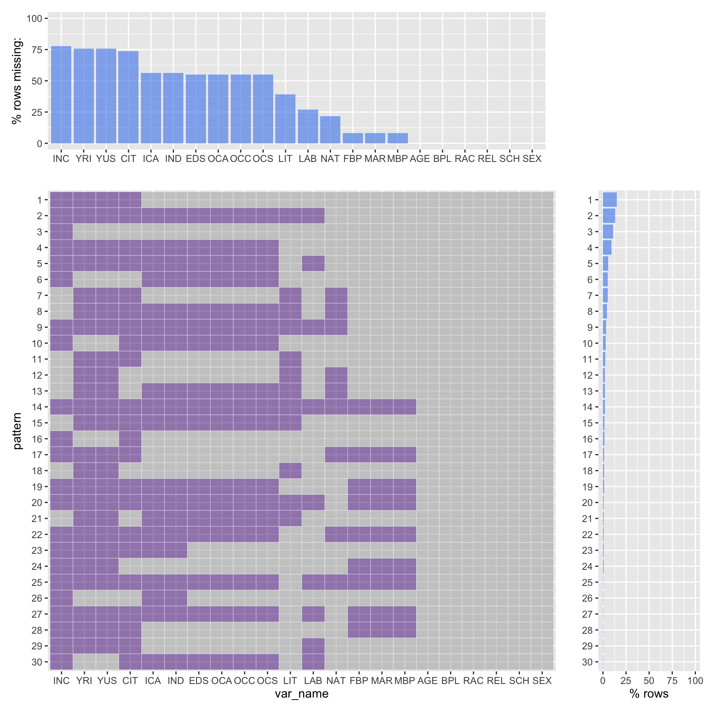
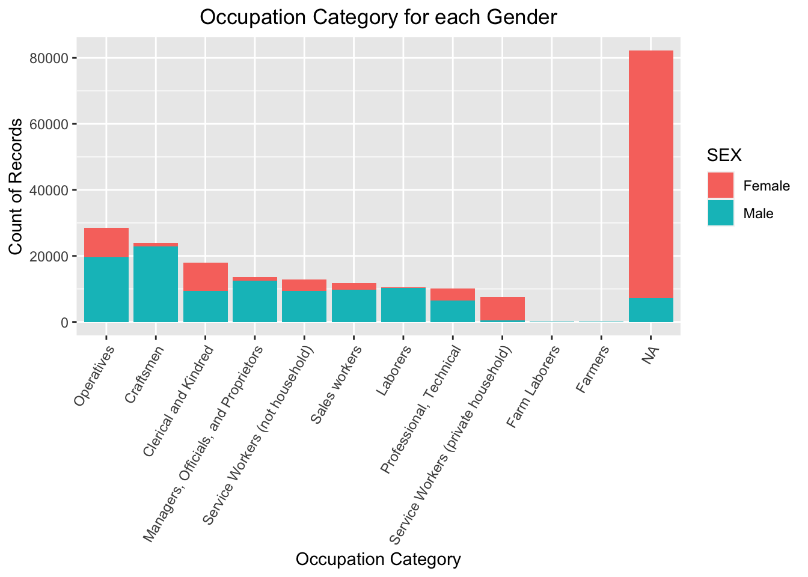
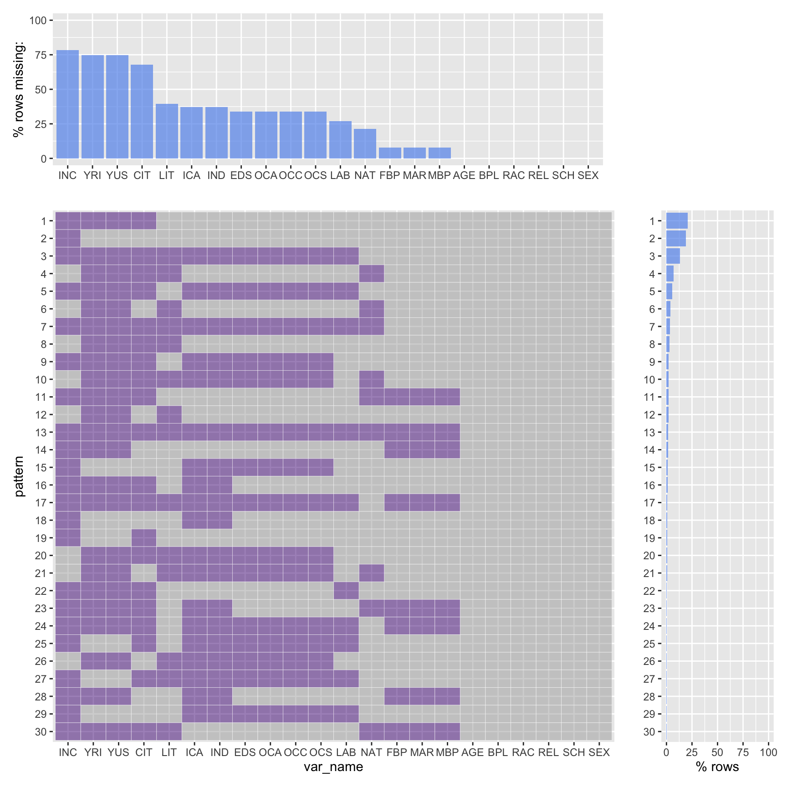
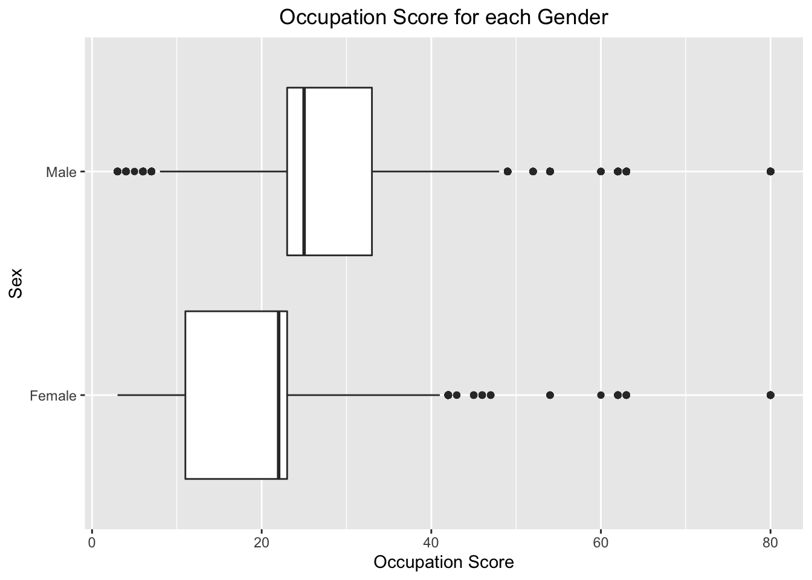

Chapter 5 Results
Before analysis, we first do data cleaning and select several features and data for analyzing. The following data contains features including three main categories, which are minority features, education features, and employment features.
- Minority Feature: Respondents Age, Respondents Race
- Education Feature: LIT(Whether could read or write or not)
- Employment Feature: LABFORCE(Whether in the job market), OCCSCORE(Occupational income score), OCC1950CAT(Occupational category in 1950 standard), IND19050CAT(Industry category in 1950 standard)
The following analysis will give a glimpse of the minority working conditions, the influence of education levels, and the working conditions transition across different years.
5.1 Working Conditions
5.1.1 Gender and Employment
- Labor force percentage for each gender: From the following figure, we could conclude that most of the male are in the labor force, while half of the female are not in the labor force. There is significant difference in working conditions between male and female.

- Occupation score for each gender: The occupation score represents the salary for the workers. As shown in the following figure, the occupation score for male workers are significant higher than the female workers.
- Occupation category for each gender: There is difference between each gender for the occupation categories. Female tends to work as operatives, clerical and kindred and private household service workers. Male tends to work as craftsmen, managersm and laborers.

- Industry category for each gender: There is difference between male and female in industry categories. Female tends to work in manufacturing-nondurable goods, personal services, and professional and related services. Male tends to work in durable goods manufacturing, construction, and transportation.
5.1.2 Race and Employment
- Labor force percentage for each Race: As shown in the following figure, there is little difference between each race in the labforce percentage. Black people working percentage is litter higher than white people.
- Occupation Score for each Race: Although there is little difference between each race in working percentage, there is significant difference between occupation score. It shows white people have significantly higher salary than black people and other races. And the variance in salary for white people is lees than other races. Therefore, it means white people salary is high and centered.
- Occupation category for each Race: Black people tend to work as operatives, service workers and laborers. White people tend to work as craftsmen, clerical and kindred, managers and sales workers.

- Industry category for each race: Black people tend to work in personal services industry.
5.2 Education and Employment
- Labor force for each gender and literate: As shown in the figure, there is little difference between those who are literate and who are illiterate in male workers. However, female who are literate are more likely in the labor force.

- Labor force for each race and literate: From the following figure, the people who are literate tend to be in the labor force. Especially for white people, white people who are literate significantly tend to work in the labor force.
- Occupation score for each race and literate: From the following figure, we conclude that people who are literate tend to have higher salary than those who are not literate. Especially for female workers, literate female workers median salary are significantly highers than illiterate female workers.

- Occupation score for each race and literate: The figure shows literate people tend to have higher salary. Especially for black people, the median salary for literate black workers are higher than illiterate black workers.
- Occupation category and literate level: The following figure shows illiterate people tend to work as operatives, craftsmen and laborers, and literate people tend to work as clerical and kindred, sales workers, and professional.
- Industry category and literate level: illiterate people tend to work in retail, manufacuring-nondurable goods, and personal services area. And literate people can work in industries like finance, business, public administrationm, etc.

5.3 Time series and Employment
- Labor force for races and genders from 1850 to 1940: From the following figure, we could conclude that from 1850 to 1940, more and more female white people enter the labor force. The male workers start to enter the labore force from 1850 to 1920, and then some of them quit the labor force in 1930s and 1940s.
- Occupation score for races and genders from 1850 to 1940: As shown in the figure, from 1850 to 1940, the female occupation score increase, especially for white people. And the black male workers salary increase a little. The salary for white male is steady acoross different years.

5.4 Conclusion
- The minority working conditions are worse than the majority. Female workers who are in the labor force percentage is significantly less than the male workers, and the salary for female workers is less than male workers. There is little difference between difference races in the labor force. However, the salary for the male workers are less than white people.
- There are significant difference in industry categories and types of work between male workers and female workers. Female workers tend to work in the industry like personal services as services workers, while male workers tend to work in construction, transportation, etc. as craftsman, laborer, etc. And the black people tend to work in personal services as services workers, while white people tend to work in officials, finance, etc. as managers or professionals.
- Education levels significantly influence the working conditions. Literate people tend to have higher salary, and work at officials, business, finance area as professionals or managers. Illiterate people have lower salary, and work at construction, manufacturing as workers and craftsman.
- From 1850 to 1940, minority people working conditions improve a lot. The salary and percentage of people in the labor force increase for female workers and black workers.